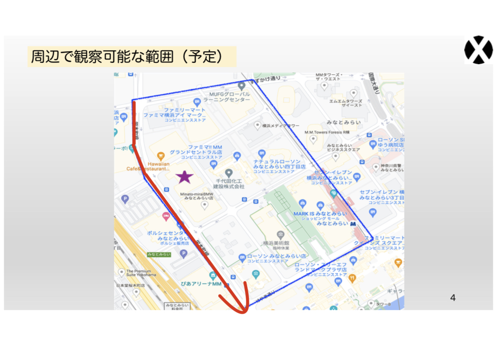
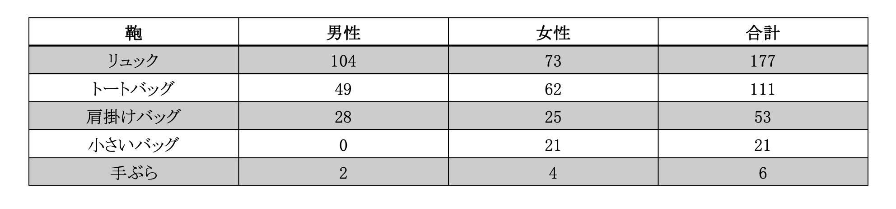
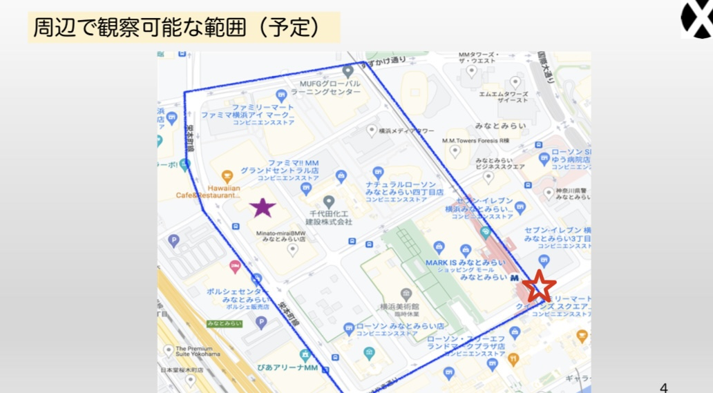
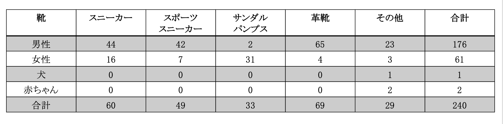

第3回課題
路上観察
調査対象
鞄
5種類(リュック)(トートバッグ)(肩がけバッグ)(小さいバッグ)(手ぶら)
[調査対象]
男性、女性
調査条件
[観察場所]
セブン-イレブン 横浜みなとみらい４丁目店からぴあアリーナMMまで

[観測時間]
約10分39秒
[方法]
動画撮影、カウンター
[日時]
2022年10月18日（火）3限
[結果]

結果の表を見て分かる通り、リュックの人数が圧倒的に多かった。
神奈川大学の学生が多いためリュック率が高くなるのでははないかと予想していたが、
予想外にも一番の理由はぴあアリーナMMだった。
異様に人が多かった為,検索をかけてみたところ日向坂46が全国アリーナツアーを行なっていた。
これはかなり想定外の出来事だった。事前に調べておけばこのような偏った結果にはならなかったので反省点だ。
調査対象
靴
5種類(スニーカー)(スポーツスニーカー)(サンダルorパンプス)(革靴)(その他)
[調査対象]
男性、女性、犬、赤ちゃん
調査条件
[観察場所]
Queen's square前 交差点

[定点観測時間]
30分
[方法]
タイムラプス、カウンター
[日時]
2022年10月18日（火）3限
[結果]

革靴を履いている人の大半はスーツを着たサラリーマンであった。
「その他」に含まれているが、女性会社員のパンプスの割合がほとんどであった。
季節的にブーツが多く見受けられると考えていたが、あまり多くなかった。
スポーツ系のスニーカーは男性が多い傾向にあった。
男女関係なくお年寄りの靴はあまり綺麗と言えるものではなかった。
若者の靴は新品に見えるぐらい綺麗であった。
若者と年寄りとでは靴に対する価値観が違う。